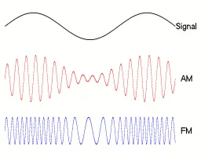

Radio Theory
The Radio Wave
A radio wave can be defined using two properties - frequency and amplitude, therefore, data can be transmitted by varying each of these two properties
Amplitude Modulation (AM)
- Generally longer range
Frequency Modulation (FM)
- Provides a less noisy signal
- More impacted by physical barriers

(Military Aviation) Radio Bands
VHF FM Band
- 30-88 MHz
- 25KHz Channel Spacing
- Calling Frequency: 30.0 MHz
- Typically used for A/G communication - e.g. with a JTAC
VHF AM Band
- 118-137 MHz (non-voice part: 108-118 MHz)
- 8.33 kHz Channel Spacing
- If possible, channels are spaced by 25kHz
- Calling Frequency - 121.5 MHz
- Used by Civilian Aviation
UHF AM Band
- 225-400 MHz
- 100 kHz Channel Spacing
- Calling Frequency - 243.0 MHz (GUARD)
- Used for Military Aviation communications
Restrictions on Radio Communications
Unfortunately, radio is not like a discord call, there are certain restrictions which we must be mindful of when operating a radio.
How do we tell if we're getting a transmission or just noise?
- We set a 'squelch', this means that the radio only outputs when the receiving power is above a certain threshold.
What happens when we want to transmit and receive at the same time?
- All aviation radios use simplex (sometimes called semi-duplex) channels - the same frequency to transmit and receive - this means that when you're transmitting, you cannot receive others' transmissions.
- A traditional duplex channel will use one frequency to receive, and one frequency to transmit
What happens when multiple radios transmit at once?
- AM - The radio waves interfere, if one station is transmitting at a much higher power, it will be heard over the other, if not, neither will be heard and the output is known as a 'blocking tone'
- FM - The output rapidly switches between stations - known as 'picket fencing'
Guard Receive/Multi-Watch
Another feature of modern radios is the ability to operate on one frequency but receive on multiple - this functionality is known as multi-watch. Often it is used to monitor the band's calling frequency (hence the name GUARD receive).
Multi-Watch works by flicking between watched frequencies and listening for a transmission. If the radio detects a transmission on a watched frequency, it 'locks onto' that transmission, once the transmission is over it goes back to watching.